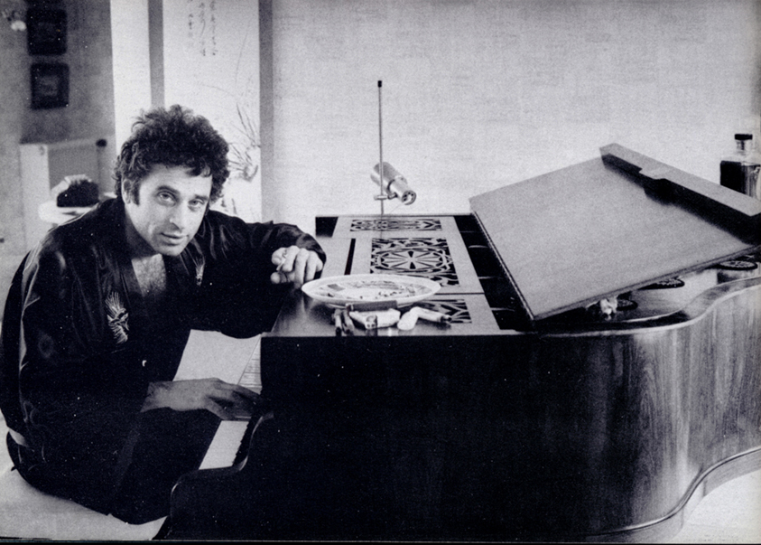

1- Quitte-moi dévoreuse , composé et chanté par John sur des paroles de Cr.
2- Un refrain dont s'échappent des larmes
3- Sois cratère ou deviens montagne
4- Écrivain alcoolique
5- Young Poet won't rise